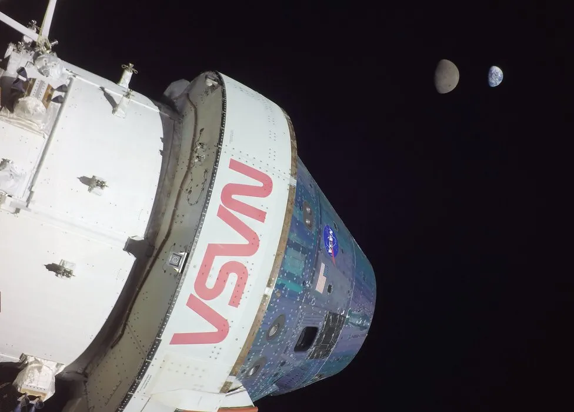

Published on January 10, 2024 by John Amos
It represents a slip of a year in the previously targeted date for the return of humans to the lunar surface that was last achieved in 1972.
Nasa says the delay to what's known as its Artemis III mission will enable further technology development.
Announcing the delay, agency administrator Bill Nelson said safety drove all timing considerations.
"We won't fly until we're ready," he told reporters.